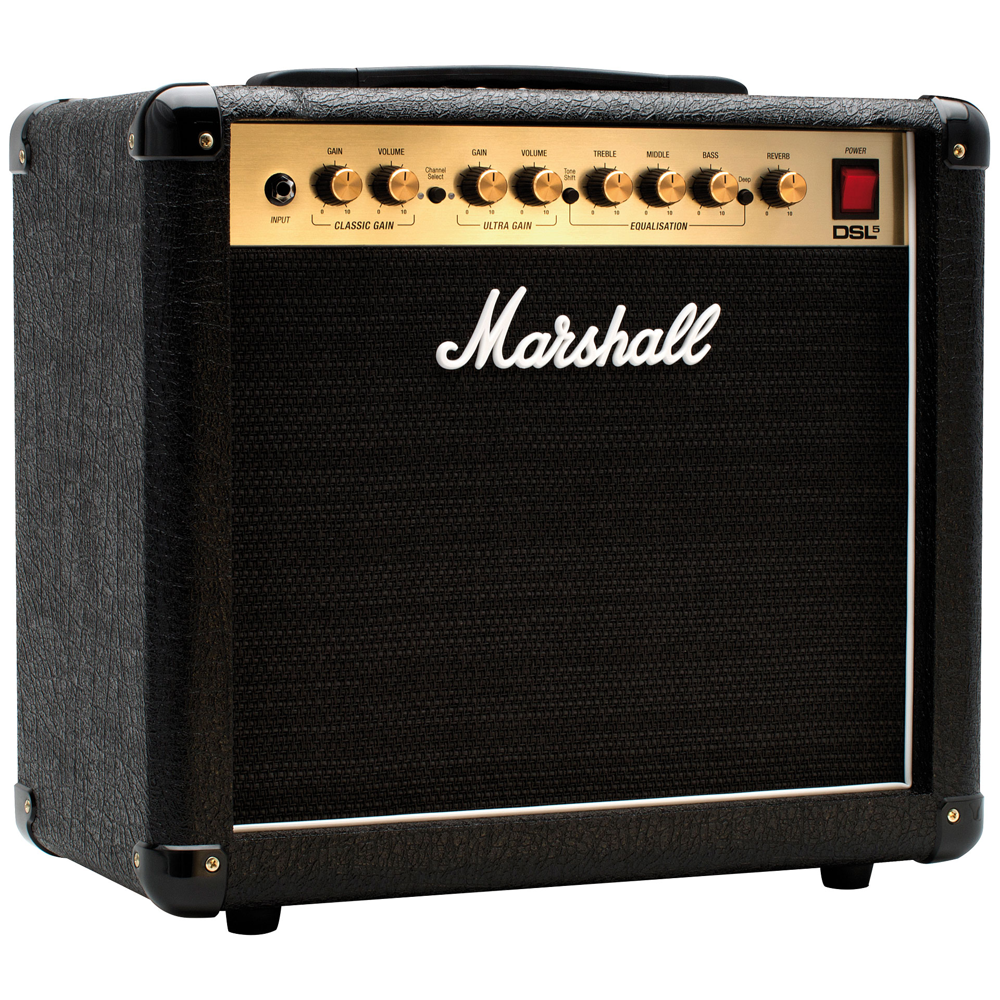

-Primero vamos a ver las partes de la guitarra:
-Podemos conectarlas a un amplificador, que hace que el sonido se distorsione o suene más alto
|  | Aquí podemos percibir cómo se oye cuando la guitarra está conectada: |
·Pincha en este enlace para ver una tabla sobre los tipos de guitarras de distintos artistas
·Si te gustaría saber cómo realizar 10 distintos acordes fáciles para principiantes pincha aquí:
· Acordes
·Por último, aquí te dejo una canción con una guitarra principal y otra guitarra secundaria, espero que la disfrutes.